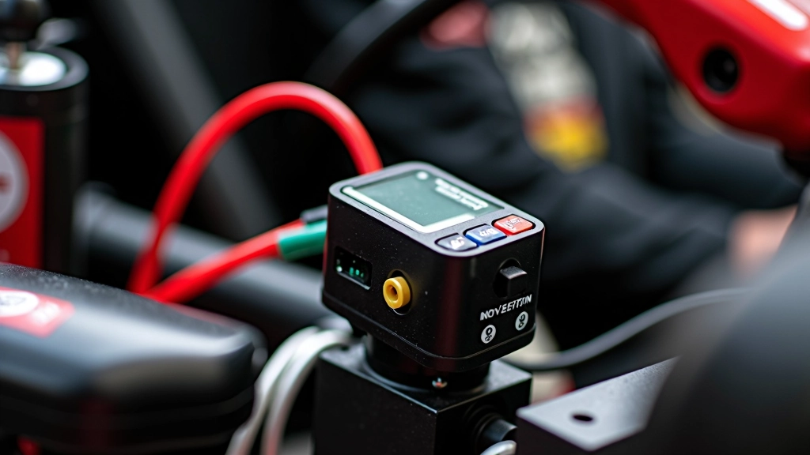

تحسين أداء المنعطفات باستخدام تحليل البيانات
تعلم كيفية تحليل أداء المنعطفات بالتفصيل وتحديد المجالات التي يمكن تحسينها من خلال بيانات التلمتري.
شرح مفصل لكل المعادلات والقراءات الأساسية التي تظهر على شاشات تحليل البيانات، وكيفية استخدامها لتحسين أدائك على المسار.
التلمتري هو ببساطة جمع البيانات من سيارتك أثناء السباق. أجهزة استشعار صغيرة توضع في أماكن مختلفة تسجل كل شيء — السرعة، زوايا الانعطاف، درجة حرارة الإطارات، والضغط، وحتى كيفية استجابتك على دواسات التحكم. كل هذا يتم تجميعه في ملف واحد يمكنك تحليله لاحقاً.
لماذا يهم هذا؟ لأنه يخبرك بالضبط أين تخسر الوقت. ليس عليك أن تخمن — البيانات تقول لك بالضبط ما يحدث. هل أنت بطيء جداً في دخول المنعطف؟ هل تضغط على دواس الغاز بشكل غير متوازن؟ هل الإطارات تسخن بشكل صحيح؟ كل هذه الأسئلة يمكن الإجابة عليها من خلال البيانات.

عندما تفتح برنامج تحليل البيانات لأول مرة، قد تشعر بالإرهاق. هناك الكثير من الأرقام والرسوم البيانية. لكن لا تقلق — معظم ما تحتاج للتركيز عليه يندرج في فئات قليلة بسيطة.
تُقاس عادة بـ km/h أو mph. تخبرك بمدى سرعة حركتك في أي لحظة معينة. الشيء الأساسي هنا هو أين تصل إلى أقصى سرعة ومتى تبدأ بالإبطاء. إذا كنت أسرع من منافسيك على مسافة معينة، فأنت تفعل شيئاً صحيحاً هناك.
تقيس مدى دوران عجلة القيادة. تقاس بالدرجات. كلما زادت الزاوية، كلما أدرت العجلة أكثر. تُستخدم هذه البيانات لفهم ما إذا كنت تستخدم الكثير من التوجيه أو القليل جداً في المنعطفات.
الإطارات الساخنة تعطي قبضة أفضل. لكن إذا أصبحت ساخنة جداً، تفقد الأداء. تحتاج للإطارات إلى حوالي 80-90 درجة مئوية للعمل بشكل مثالي. إذا كانت أبرد من ذلك، فأنت لا تستفيد من الاحتكاك. إذا كانت أكثر سخونة، قد تبدأ بالانزلاق.
هذا الدليل مقدم لأغراض تعليمية وإعلامية فقط. البيانات التي تجمعها ستختلف بناءً على نوع سيارتك والمسار والظروف الجوية. يُنصح دائماً باستشارة مدرب أو متخصص ذي خبرة لتفسير بيانات التلمتري الخاصة بك بشكل صحيح، خاصة عندما تكون جديداً في هذا المجال.
حسناً، لديك الآن البيانات. الآن ماذا؟ الخطوة الأولى هي مقارنة لفتك مع لفة أخرى. قد تكون أسرع لفة لك أو لفة منافس. عندما تقارن الاثنتين جنباً إلى جنب، ستلاحظ الاختلافات. ربما دخلت منعطفاً معيناً بسرعة أقل. ربما أخرجت الكبح في وقت مختلف قليلاً.
هذا هو المكان الذي يحدث فيه التعلم الحقيقي. تحديد الفروقات الصغيرة وفهم لماذا يُحدث الفرق. إذا كنت تدخل منعطفاً بسرعة 45 كم/س بينما يدخله منافسك بـ 48 كم/س، فإن تلك الـ 3 كم/س الإضافية ستجمع على مدار اللفة بأكملها. قد تجعل الفرق بين الفوز والخسارة.
ابدأ بمنعطف واحد فقط. لا تحاول تحسين كل شيء في نفس الوقت.
راقب كيف تتغير بيانات الإطار — هذا يخبرك إذا كنت تدفع السيارة بشكل صحيح.
اختبر تغييراً واحداً فقط في كل مرة حتى تعرف ما الذي يساعد فعلاً.
استكشف مقالات أخرى ذات صلة لتعمق فهمك لتحليل البيانات
تعلم كيفية تحليل أداء المنعطفات بالتفصيل وتحديد المجالات التي يمكن تحسينها من خلال بيانات التلمتري.

دليل شامل لاختيار نظام تسجيل البيانات المناسب لاحتياجاتك وميزانيتك.

اكتشف كيفية استخدام البيانات لمقارنة أدائك بشكل مباشر مع السائقين الآخرين.
فريق التحرير والمراجعة
كتبه فريق لاب تايمز للتحرير، متخصصون في توفير إرشادات عملية وسهلة الفهم حول تسجيل البيانات وتحليل اللفات. نركز على جعل المعلومات التقنية المعقدة سهلة الفهم للجميع.
فهم بيانات التلمتري ليس معقداً كما يبدو. تذكر — أنت لا تحتاج إلى أن تكون عالم رياضيات. تحتاج فقط إلى فضول وقليل من الصبر. ابدأ بمنعطف واحد. قارن لفتك مع أسرع لفة. انظر أين الفروقات. اختبر تحسيناً صغيراً. كرر العملية. هذا هو السحر الحقيقي للبيانات.
كل سائق احترافي تقريباً يستخدم البيانات الآن. إنها ليست ميزة — إنها ضرورة. لكن الخبر السار هو أن البدء سهل جداً. لديك كل ما تحتاجه لبدء التحليل والتحسن. كل ما تحتاجه هو الرغبة في التعلم والمثابرة على التدريب.
استكشف مقالات أخرى في قسم تسجيل البيانات وتحليل اللفات للحصول على معلومات أعمق وتقنيات متقدمة.
اعرض جميع المقالات